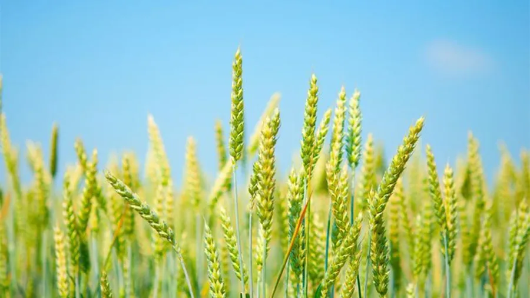
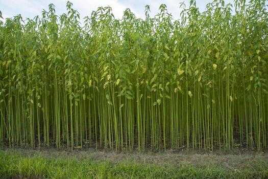

Crop Details

Golden Paddy (Rice)
- Type: Cereal Grain
- Season: Kharif/Rabi
- Soil: Clay or Loamy
- Duration: 120-140 Days
Rich in Carbohydrates and Vitamin B. Keep fields flooded in early stages.

Wheat
- Type: Cereal Grain
- Season:Rabi (Winter)
- Soil: Well-drained Loamy Soil
- Duration:100–120 Days
"Source of Protein and Fiber. Requires a cool climate and dry weather during the final ripening stage."

Potato
- Type:Tuber / Vegetable
- Season: Rabi (Winter)
- Soil: Loose, Sandy-Loam Soil
- Duration:80–100 Days
"Rich in Starch and Vitamin C. Needs loose soil for tuber growth and careful monitoring for late blight disease."

Jute
- Type: Fiber Crop (Golden Fiber)
- Season: Kharif (Summer/Monsoon)
- Soil:Alluvial or Loamy Soil
- Duration: 120–150 Days
"Strong biodegradable fiber. Needs high humidity and standing water for the retting process after harvest."